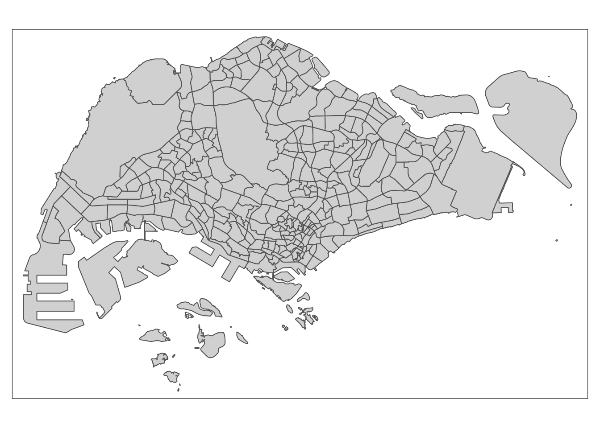

pacman::p_load(sp, sf, spdep, GWmodel, tmap, carat, stplanr, reshape2, broom, tidyverse)In-class_Ex10
odbus <- read_csv("data/aspatial/origin_destination_bus_202210.csv")odbus$ORIGIN_PT_CODE <- as.factor(odbus$ORIGIN_PT_CODE)
odbus# A tibble: 5,122,925 × 7
YEAR_MONTH DAY_TYPE TIME_PER_HOUR PT_TYPE ORIGIN_PT…¹ DESTI…² TOTAL…³
<chr> <chr> <dbl> <chr> <fct> <dbl> <dbl>
1 2022-10 WEEKDAY 10 BUS 65239 65159 2
2 2022-10 WEEKENDS/HOLIDAY 10 BUS 65239 65159 1
3 2022-10 WEEKENDS/HOLIDAY 7 BUS 23519 23311 2
4 2022-10 WEEKDAY 11 BUS 52509 42041 1
5 2022-10 WEEKENDS/HOLIDAY 16 BUS 54349 53241 1
6 2022-10 WEEKDAY 16 BUS 54349 53241 4
7 2022-10 WEEKDAY 20 BUS 43371 14139 1
8 2022-10 WEEKENDS/HOLIDAY 7 BUS 84081 92099 3
9 2022-10 WEEKDAY 7 BUS 84081 92099 1
10 2022-10 WEEKDAY 11 BUS 84051 95061 5
# … with 5,122,915 more rows, and abbreviated variable names ¹ORIGIN_PT_CODE,
# ²DESTINATION_PT_CODE, ³TOTAL_TRIPSodbus$ORIGIN_PT_CODE <- as.factor(odbus$ORIGIN_PT_CODE)
odbus$DESTINATION_PT_CODE <- as.factor(odbus$DESTINATION_PT_CODE)We will extract the commuting flows on weekday and between 7 and 9 o’clock.
odbus7_9 <- odbus %>%
filter(DAY_TYPE == "WEEKDAY") %>%
filter(TIME_PER_HOUR >= 7 &
TIME_PER_HOUR <= 9) %>%
group_by(ORIGIN_PT_CODE,
DESTINATION_PT_CODE) %>%
summarise(TRIPS = sum(TOTAL_TRIPS))write_rds(odbus7_9, "data/rds/odbus7_9.rds")busstop <- st_read(dsn = "data/geospatial",
layer = "BusStop") %>%
st_transform(crs = 3414)Reading layer `BusStop' from data source
`/Users/yashica/Desktop/xtc0/IS415-GAA/In-class_Ex/In-class_Ex11/data/geospatial'
using driver `ESRI Shapefile'
Simple feature collection with 5159 features and 3 fields
Geometry type: POINT
Dimension: XY
Bounding box: xmin: 3970.122 ymin: 26482.1 xmax: 48284.56 ymax: 52983.82
Projected CRS: SVY21mpsz <- st_read(dsn = "data/geospatial",
layer = "MPSZ-2019") %>%
st_transform(crs = 3414)Reading layer `MPSZ-2019' from data source
`/Users/yashica/Desktop/xtc0/IS415-GAA/In-class_Ex/In-class_Ex11/data/geospatial'
using driver `ESRI Shapefile'
Simple feature collection with 332 features and 6 fields
Geometry type: MULTIPOLYGON
Dimension: XY
Bounding box: xmin: 103.6057 ymin: 1.158699 xmax: 104.0885 ymax: 1.470775
Geodetic CRS: WGS 84mpszSimple feature collection with 332 features and 6 fields
Geometry type: MULTIPOLYGON
Dimension: XY
Bounding box: xmin: 2667.538 ymin: 15748.72 xmax: 56396.44 ymax: 50256.33
Projected CRS: SVY21 / Singapore TM
First 10 features:
SUBZONE_N SUBZONE_C PLN_AREA_N PLN_AREA_C REGION_N
1 MARINA EAST MESZ01 MARINA EAST ME CENTRAL REGION
2 INSTITUTION HILL RVSZ05 RIVER VALLEY RV CENTRAL REGION
3 ROBERTSON QUAY SRSZ01 SINGAPORE RIVER SR CENTRAL REGION
4 JURONG ISLAND AND BUKOM WISZ01 WESTERN ISLANDS WI WEST REGION
5 FORT CANNING MUSZ02 MUSEUM MU CENTRAL REGION
6 MARINA EAST (MP) MPSZ05 MARINE PARADE MP CENTRAL REGION
7 SUDONG WISZ03 WESTERN ISLANDS WI WEST REGION
8 SEMAKAU WISZ02 WESTERN ISLANDS WI WEST REGION
9 SOUTHERN GROUP SISZ02 SOUTHERN ISLANDS SI CENTRAL REGION
10 SENTOSA SISZ01 SOUTHERN ISLANDS SI CENTRAL REGION
REGION_C geometry
1 CR MULTIPOLYGON (((33222.98 29...
2 CR MULTIPOLYGON (((28481.45 30...
3 CR MULTIPOLYGON (((28087.34 30...
4 WR MULTIPOLYGON (((14557.7 304...
5 CR MULTIPOLYGON (((29542.53 31...
6 CR MULTIPOLYGON (((35279.55 30...
7 WR MULTIPOLYGON (((15772.59 21...
8 WR MULTIPOLYGON (((19843.41 21...
9 CR MULTIPOLYGON (((30870.53 22...
10 CR MULTIPOLYGON (((26879.04 26...busstop_mpsz <- st_intersection(busstop, mpsz) %>%
select(BUS_STOP_N, SUBZONE_C) %>%
st_drop_geometry()od_data <- left_join(odbus7_9, busstop_mpsz,
by = c("ORIGIN_PT_CODE" = "BUS_STOP_N")) %>%
rename(ORIGIN_BS = ORIGIN_PT_CODE,
ORIGIN_SZ = SUBZONE_C,
DESTIN_BS = DESTINATION_PT_CODE)duplicate <- od_data %>%
group_by_all() %>%
filter(n()>1) %>%
ungroup()od_data <- unique(od_data)Do left join to bring in another column.
od_data <- left_join(od_data, busstop_mpsz,
by = c("DESTIN_BS" = "BUS_STOP_N"))duplicate <- od_data %>%
group_by_all() %>%
filter(n()>1) %>%
ungroup()od_data <- unique(od_data)od_data <- od_data %>%
rename(DESTIN_SZ = SUBZONE_C) %>%
drop_na()write_rds(odbus7_9, "data/rds/od_data.rds")Visualising the Geospatial Data
tmap_mode("plot")
qtm(mpsz)
Isolating SUBZONE_C into a new df
mpsz <- mpsz[order(mpsz$SUBZONE_C),]
head(mpsz, 10)Simple feature collection with 10 features and 6 fields
Geometry type: MULTIPOLYGON
Dimension: XY
Bounding box: xmin: 26154.57 ymin: 37511.2 xmax: 31072.47 ymax: 41804.65
Projected CRS: SVY21 / Singapore TM
SUBZONE_N SUBZONE_C PLN_AREA_N PLN_AREA_C REGION_N
171 ANG MO KIO TOWN CENTRE AMSZ01 ANG MO KIO AM NORTH-EAST REGION
170 CHENG SAN AMSZ02 ANG MO KIO AM NORTH-EAST REGION
163 CHONG BOON AMSZ03 ANG MO KIO AM NORTH-EAST REGION
330 TOWNSVILLE AMSZ04 ANG MO KIO AM NORTH-EAST REGION
329 SHANGRI-LA AMSZ05 ANG MO KIO AM NORTH-EAST REGION
172 KEBUN BAHRU AMSZ06 ANG MO KIO AM NORTH-EAST REGION
233 SEMBAWANG HILLS AMSZ07 ANG MO KIO AM NORTH-EAST REGION
254 TAGORE AMSZ08 ANG MO KIO AM NORTH-EAST REGION
242 YIO CHU KANG WEST AMSZ09 ANG MO KIO AM NORTH-EAST REGION
252 YIO CHU KANG AMSZ10 ANG MO KIO AM NORTH-EAST REGION
REGION_C geometry
171 NER MULTIPOLYGON (((29692.8 389...
170 NER MULTIPOLYGON (((30384.33 39...
163 NER MULTIPOLYGON (((30676.17 39...
330 NER MULTIPOLYGON (((29649.88 38...
329 NER MULTIPOLYGON (((28228.2 392...
172 NER MULTIPOLYGON (((28491.21 39...
233 NER MULTIPOLYGON (((27744.03 38...
254 NER MULTIPOLYGON (((27193.46 41...
242 NER MULTIPOLYGON (((29269.91 39...
252 NER MULTIPOLYGON (((29598.36 39...Computing the distance matrix
mpsz_sp <- as(mpsz, "Spatial")If using st_dist() if using sf instead. This is using sp
dist <- spDists(mpsz_sp)sz_names <- mpsz$SUBZONE_CAttaching SUBZONE_C to row and column for distance matrix matching ahead
Do this to ensure that we calc distance metric acc to the zone.
colnames(dist) <- paste0(sz_names)
rownames(dist) <- paste0(sz_names)Pivoting distance value by SUBZONE_C
#melt the dist so they become 2 cols - destination and origin
distPair <- melt(dist) %>%
rename(dist = value)
head(distPair, 10) Var1 Var2 dist
1 AMSZ01 AMSZ01 0.0000
2 AMSZ02 AMSZ01 810.4491
3 AMSZ03 AMSZ01 1360.9294
4 AMSZ04 AMSZ01 840.4432
5 AMSZ05 AMSZ01 1076.7916
6 AMSZ06 AMSZ01 805.2979
7 AMSZ07 AMSZ01 1798.7526
8 AMSZ08 AMSZ01 2576.0199
9 AMSZ09 AMSZ01 1204.2846
10 AMSZ10 AMSZ01 1417.8035Updating intra-zonal distances
distPair %>%
filter(dist > 0) %>%
summary() Var1 Var2 dist
AMSZ01 : 331 AMSZ01 : 331 Min. : 173.8
AMSZ02 : 331 AMSZ02 : 331 1st Qu.: 7149.5
AMSZ03 : 331 AMSZ03 : 331 Median :11890.0
AMSZ04 : 331 AMSZ04 : 331 Mean :12229.4
AMSZ05 : 331 AMSZ05 : 331 3rd Qu.:16401.7
AMSZ06 : 331 AMSZ06 : 331 Max. :49894.4
(Other):107906 (Other):107906 # if distance value == 0, we update to 50. We chose 50 coz still less than min dist that we found in summary score. Min dist is between 2 points, replacing insignificant distances shouldnt affect main dataset
distPair$dist <- ifelse(distPair$dist == 0, 50, distPair$dist)distPair <- distPair %>%
rename(orig = Var1,
dest = Var2)write_rds(distPair, "data/rds/distPair.rds")#flow data chunkpop <- read_csv("data/aspatial/pop.csv")#doing this coz for flowdata we have the flow data codename but for population we dont
pop <- pop %>% left_join(mpsz, by=c("PA" = "PLN_AREA_N",
"SZ" = "SUBZONE_N")) %>% select(1:6) %>%
rename(SZ_NAME = SZ,
SZ = SUBZONE_C)flow_data <- flow_data %>%
left_join(distPair, by = c("ORIGIN_SZ" = "orig",
"DESTIN_SZ" = "dest"))flow_data1 <- flow_data1 %>%
left_join(pop,
by = c(ORIGIN_SZ = "SZ")) %>%
rename(ORIGIN_AGE7_12 = AGE7_12,
ORIGIN_AGE13_24 = AGE13_24,
ORIGIN_AGE25_64 = AGE25_64) %>%
select(-c(PA, SZ_NAME))flow_data1 <- flow_data1 %>%
left_join(pop,
by = c(DESTIN_SZ = "SZ")) %>%
rename(DESTIN_AGE7_12 = AGE7_12,
DESTIN_AGE13_24 = AGE13_24,
DESTIN_AGE25_64 = AGE25_64) %>%
select(-c(PA, SZ_NAME))